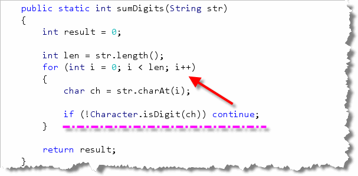
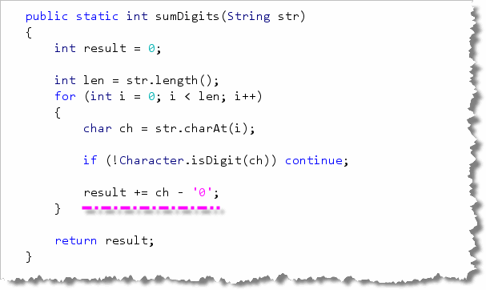

In lecture
you learned how to use the break and continue
statements to "fine-tune" the operation of your loops.
Let's put the continue statement to work solving
a problem you met earlier in the semester, SumDigits.
Summing Digits by Jumping
Let's look at an example from where you might want to
use the continue statement with a for
loop. We've already seen two programs that sum the digits in
an integer. How about summing the digits in a String?
Well, that's easy. To turn a String containing digits
into an integer, you can use the Integer.parseInt()
method. You can walk through the String with a
for loop, extracting each single-character
digit substring. Use Integer.parseInt() on the substring,
and add that to the running total.
There are two complications, though:
- all of the characters inside the
Stringmay not be digits. If a character isn't a digit, then you'll want to skip it. - our plan depends on extracting single-character substrings,
but the
Character.isDigit()method, which we need to use to determine if an individual character is a digit, takes acharparameter, not aString.
Neither of these are huge problems, but they mean that the
code is a little bit more complex than the original plan
would suggest. The continue statement can make
the solution a little simpler. Open SumDigits.java
in this chapter's code folder, and find the problem summary:

Below you'll find the solution to the assignment. Try to solve the
problem on your own using the reading (Chapter 4-Page 160) and the
continue statement discussed in class.
The Solution
The first step in solving this problem is to put in the
"boiler-plate" skeleton code; that is, the code you really don't
need to think about. Here's what that looks like:
 Notice that:
Notice that:
- As with any function, our first step is to
create and initialize a variable to hold the returned
value (
resultin this case), and then add areturnstatement at the end of the function. - Since we need a loop, the next step is to determine
the loop bounds. As with most
Stringfunctions, you'll use the length as a count bounds. Since we are going to visit every character, we don't need to subtract anything from the length, like we would if we were comparing substrings of different lengths. - Finally, we need to add the "reading" or data input
part. We know that we'll need to process each character,
so we can use the
charAt()function like this.
Using continue
Now that we have a character, we have two choices. If it is a digit, we want to convert it to an integer and add it to a sum. If it is anything else, we want to just ignore it and go get the next character.
This is where the continue statement comes into
play. Use the Character.isDigit() method to check
if the character is a digit. If it is not, the
continue statement sends you right back up
to the loop update expression, like this:

Converting the Digit: Two Methods
At this point, we know that the character is a digit, and so we want to convert it to an integer, and add that integer to the sum. (Don't just add the character to the sum. The numeric Unicode value of the digit '1' is 49, and that is what would be added. You won't get the answer that you expect.)
To convert your digit to an integer, you can use
Integer.parseInt() like this:
sum += Integer.parseInt("" + ch);
Note you have to use String concatenation
because Integer.parseInt() only accepts
String parameters.
Method 2: Character Arithmetic
Another alternative is to take advantage of the fact that
all of the digit characters are contiguous, located
right next to each other in the Unicode (or any other
character set.) Since char variables are actually
16-bit numbers, you can use them in arithmetic expressions,
including subtraction.
Now, suppose ch contains the digit character
zero. If you subtract the char literal
'0' from ch you'll get the
integer value 0. The same thing works for the
other digit characters, since they are right next to
each other in the character set.
Thus, instead of using concatenation and
Integer.parseInt(), you can just do the
conversion and the addition like this:

Go ahead and run Check, and all of your tests should now pass.After you Check the homework. Then head over to Codingbat and paste your code into the text area. Make sure that you are logged in when you do so, otherwise your scores won't be recorded.